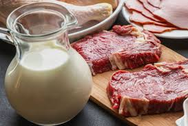

Como amaciar carne com leite: conheça esse truque simples:
Quer deixar suas receitas com carne
ainda mais gostosas e suculentas?
Confira como amaciar carne no leite:
aprenda esse truque simples, mas eficaz.
Quem nunca chegou do supermercado e logo se decepcionou com o produto comprado? É bem comum isso acontecer, principalmente com carnes. Não é todo mundo que conhece os cortes ou as melhores peças e aí o que acontece é acabar comprando um ingrediente complicado de preparar.Veja as dicas e aprenda como amaciar carne com leite. Isso mesmo! Com um truque simples, você vai transformar a sua peça de carne dura em um verdadeiro filé mignon.

Escolha e corte a carne
É importante que você não se prenda aos tipos e cortes de carne. O importante aqui é escolher a peça mais fresca e ideal para sua receita. Com esse truque, você pode facilmente levar carnes de segunda e prepará-las sem medo. Por isso, fique atento a duas coisas apenas: o frescor da carne e o tamanho dela. Na hora de preparar a proteína, o interessante é que ela esteja cortada em pedaços médios/pequenos. Assim, você cria mais zonas de contato da carne com o leite e expõe as fibras (que são as principais partes a serem atingidas).
Escolha e corte a carne
Depois de limpar a carne, tirar os excessos e cortar em pedaços ou bifes, é a hora do leite. O ideal é que você deixe a carne marinando no leite por, pelo menos, 6 horas na geladeira (se não for possível, 30 minutos já fazem diferença). Dica: você pode temperar o leite com um pouco de sal grosso e pimenta-do-reino, mas não é obrigatório. Encontre um recipiente fundo: o leite precisa cobrir por completo a carne. Com 2 kgs de carne, normalmente, você precisa usar 1 litro de leite para amaciar.
Finalize o preparo
Depois de deixar a carne de molho no leite por algumas horas, retire-a da geladeira e escorra. Você terá que descartar todo o leite usado ou usar em uma segunda leva de carnes, mas sempre avalie o estado do ingrediente antes. Com a carne ainda úmida, você tem algumas alternativas antes de preparar a receita desejada.
Selar a carne: depois de escorrer a carne do leite, sele ela na frigideira ou churrasqueira antes de temperá-la.
Secar/escorrer a carne: retire a carne do leite e deixe escorrendo por alguns minutos. Ou ainda: lave com um pouco de água filtrada e seque delicadamente com um papel-toalha.
Usar assim mesmo: você pode usar a carne diretamente do recipiente com leite. O sabor da carne não muda, o ingrediente é imperceptível ao paladar.
Depois de escolhido o processo é só temperar e começar os preparos. Algumas carnes de segunda ficam prontas e perfeitas para pratos que normalmente não as usamos. Então, que tal preparar alguns deles e testar esse truque? Aqui no TudoGostoso você encontra alguns exemplos maravilhosos como o estrogonofe, a carne de panela e o bife acebolado.